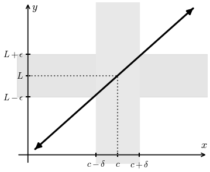

Lesson 8: The Epsilon-Delta Definition of a Limit
A table of values for \(f(x) = \frac{x^2 - 7x + 12}{x - 4}\) suggests that \(f(x)\) approaches 1 as \(x\) approaches 4. But can we be sure the pattern continues? We prove it with an epsilon-delta argument.
Consider \(f(x) = 2x + 1\). How close to 3 must \(x\) be so that \(f(x)\) is within 1 of 7?
If \(x\) is within 0.5 of 3, then \(f(x)\) is within 1 of 7.
Now You Try
Consider \(f(x) = 4x + 3\). How close to 2 must \(x\) be so that \(f(x)\) is within 0.01 of 11?
If \(x\) is within 0.0025 of 2, then \(f(x)\) is within 0.01 of 11.
We write \(\displaystyle\lim_{x \to c} f(x) = L\) when the statement below is true.
Given any number \(\epsilon > 0\), there is a number \(\delta > 0\) such that:
Epsilon-Delta Definition
Idea: If \(x\) is within \(\delta\) of \(c\), then \(f(x)\) is within \(\epsilon\) of the limit \(L\).

Given \(f(x) = 4x + 1\), use the epsilon-delta definition to prove \(\displaystyle\lim_{x \to 2} f(x) = 9\).
Scratch work: We want \(|f(x) - 9| < \epsilon\).
Proof: Given any \(\epsilon > 0\), choose \(\delta = \frac{\epsilon}{4}\). Then \(0 < |x - 2| < \delta\) implies the following.
So \(|f(x) - 9| < \epsilon\), which proves the limit.
A Sample Exam Problem
Use the epsilon-delta definition of a limit to find \(\delta\) for \(\epsilon = 0.5\).
So \(\delta = 0.03125\), which is \(\frac{1}{32}\).